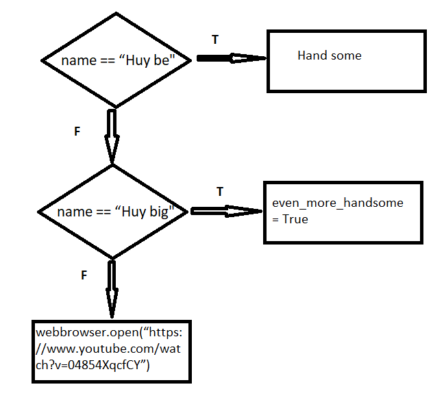

Kiểu dữ liệu Boolean (tiếng Anh: Boolean data type) là một kiểu dữ liệu có một trong hai giá trị có thể (thường được kí hiệu là đúng (true) và sai (false)), nhằm đại diện cho hai giá trị thật (truth value) của logic và đại số Boolean.
Question2Một sơ đồ là một loại biểu đồ đại diện cho một công việc hoặc quá trình . Lưu đồ cũng có thể được định nghĩa là biểu diễn sơ đồ của thuật toán , cách tiếp cận từng bước để giải quyết một nhiệm vụ. Lưu đồ hiển thị các bước dưới dạng hộp với nhiều loại khác nhau và thứ tự của chúng bằng cách kết nối các hộp với mũi tên. Biểu diễn sơ đồ này minh họa một mô hình giải pháp cho một vấn đề nhất định . Sơ đồ khối được sử dụng trong việc phân tích, thiết kế, ghi chép hoặc quản lý một quy trình hoặc chương trình trong các lĩnh vực khác nhau.
 Question3
Điều kiện lồng nhau là khi thực hiện chương trình, tổng hợp các câu lệnh có điều kiện sẽ lồng vào nhau và sẽ thực hiện theo dòng chảy của chương trình như if..esle if..if..
Example: Đã có ở bài tập về nhà